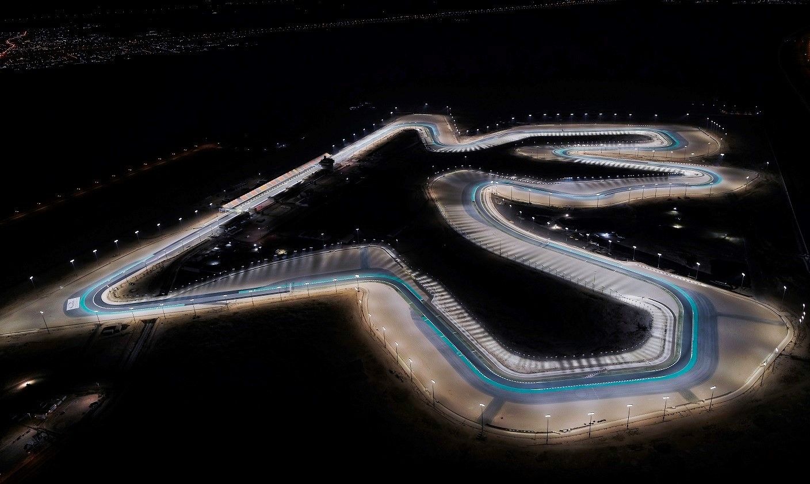
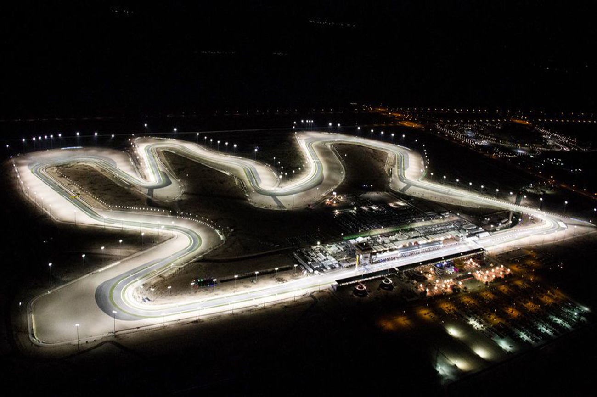
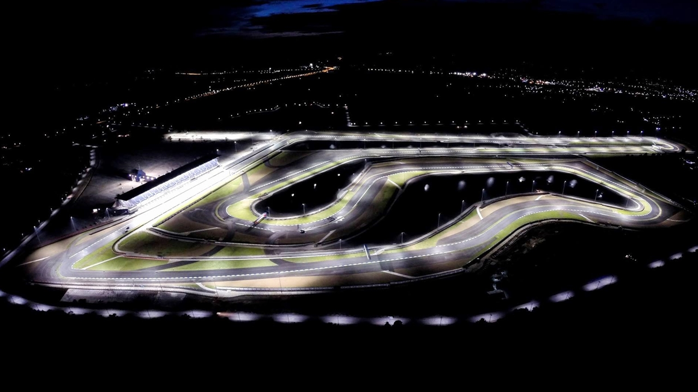
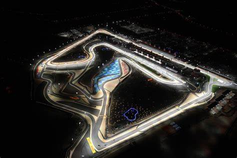

Rennstrecken
Damit Rennstrecken in den Rennkalender aufgenommen werden können, müssen sie den strengen Auflagen der Fèdèration Internationale de l´Automobile (FIA) entsprechen. So müssen sie eine Mindestlänge von 3,5km aufweisen, dürfen jedoch nicht länger als 7km sein. Der Streckenbelag muss asphaltiert sein und die Streckenbreite sowie das Gefälle, der Winkel der Kurven, der Startbereich usw. müssen genausten Vorschriften entsprechen. Seit Beginn der Formel 1 im Jahr 1950 sind 74 Rennstrecken in insgesammt 33 Ländern Austragungsort gewesen.
Folgende Strecken werden im Grand Prix (2024) genutzt:
1. Bahrain
- Stadt: Sakhir
- Länge: 5,412km
- Seit 2004 im Rennkalender
2. Saudi Arabien
- Stadt: Jeddah
- Länge: 6,174km
- Seit 2021 im Rennkalender
3. Australien
- Stadt: Melbourne
- Länge: 5,303km
- Seit 1985 im Rennkalender
4. Japan
- Stadt: Suzuka
- Länge: 5,807km
- Seit 1976 im Rennkalender
5. China
- Stadt: Shanghai
- Länge: 5,451km
- Seit 2008 im Rennkalender
6. USA
- Stadt: Miami
- Länge: 5,41km
- Seit 2022 im Rennkalender
7. Italien
- Stadt: Imola
- Länge: 4,909km
- Seit 1981 im Rennkalender
8. Monaco
- Stadt: Monte Carlo
- Länge: 3,337km
- Seit 1955 im Rennkalender
9. Canada
- Stadt: Montreal
- Länge: 4,361km
- Seit 1967 im Rennkalender
10. Spanien
- Stadt: Barcelona
- Länge: 4,657km
- Seit 1951 im Rennkalender
11. Österreich
- Stadt: Spielberg
- Länge: 4,318km
- Seit 1964 im Rennkalender
12. United Kingdom
- Stadt: Silverstone
- Länge: 5,891km
- Seit 1950 im Rennkalender
13. Ungarn
- Stadt: Budapest
- Länge: 4,381km
- Seit 150 im Rennkalender
14. Belgien
- Stadt: Spa
- Länge: 7,004km
- Seit 1950 im Rennkalender
15. Niederlande
- Stadt: Zandvoort
- Länge: 4,259km
- Seit 1952 im Rennkalender
16. Italien
- Stadt: Monza
- Länge: 5,793km
- Seit 1950 im Rennkalender
17. Azerbaijan
- Stadt: Baku
- Länge: 6,003km
- Seit 2016 im Rennkalender
18. Singapur
- Stadt: Singapur
- Länge: 4,940km
- Seit 2008 im Rennkalender
19. USA
- Stadt: Austin
- Länge:5,516km
- Seit 2012 im Rennkalender
20. Mexiko
- Stadt:Mexiko City
- Länge: 4,053km
- Seit 1963 im Rennkalender
21. Brasilien
- Stadt: Sao Paulo
- Länge: 4,309km
- Seit 1973 im Rennkalender
22. USA
- Stadt: Las Vegas
- Länge: 6,201km
- Seit 2023 im Rennkalender
23. Qatar
- Stadt: Lusail
- Länge: 5,419km
- Seit 2021 im Rennkalender
24. Abu Dhabi
- Stadt: Yas Marina
- Länge: 5,281km
- Seit 2009 im Rennkalender




Vier Strecken aus der Vogelperspektive